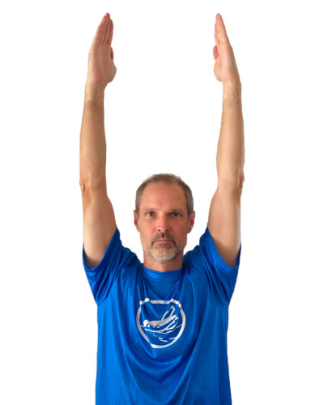
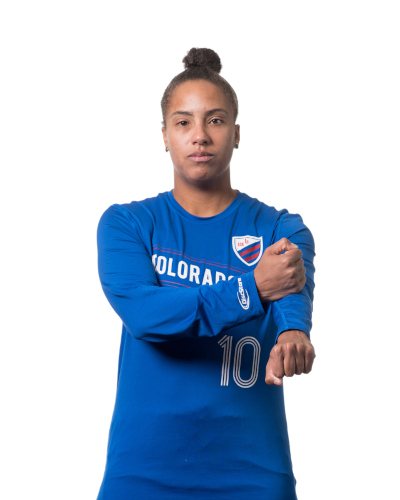

|
|
 |
Perimeter Line Goal Line Team Line Equipment Line |
Ultimate is a sport that inspires players and fans alike because of its ability to develop and showcase the athleticism, skill, teamwork, and character of its participants. The arc of the disc in flight, the opportunity for each individual to contribute equally to their team’s success, and the trust given to each player to know and uphold the rules make ultimate a sport that is embraced for its fun and excitement on the field and for the community beyond it. As a low-cost sport requiring minimal equipment, offering single and mixed-gender play, and providing a format that builds communication and conflict resolution skills, ultimate provides a welcoming, high value experience for players and fans from a diverse set of backgrounds and experiences. The Official Rules of Ultimate 2020-2021 describes how the game is played, including how players self-officiate and apply the principles of Spirit of the Game in competition.
 |
  |
 |
| In- or out-of-bounds | Disc up or down | In the end zone |
|  |  |
Artwork Pending |
| Goal | Force-out foul | Bobble |
|  | Artwork Pending |
|
| Foul | No contest | Contest |
 |
 |
 |
| Retraction (3 swipes) | Injury timeout | Disc uncatchable |
 |
Artwork Pending (consistent with WFDF) |  |
| Travel | Pick | Stall or time violation |
 |
 |
 |
| Readiness or brick | Play has stopped | Announce stall (use appropriate number of fingers) |
 |
 |
 |
| Double team/td> | Disc space | Fast count |
 |
Artwork Pending (arms out to the side like a T) |
Artwork Pending (hands behind head, elbows out) |
| Vision blocking | Gender ratio: 4 women | Gender ratio: 4 men |
 |
  |
 |
| Offsides | 10/20 seconds | Pre-stall count |
Artwork Pending |
Artwork Pending (consistent with WFDF) |
 |
| Timeout | Spirit timeout | Injury substitution |
|
|
|
| Observer ruling | Observer overrule | Call on field |
 |
||
| Timeout |
| Under-12 | Under-15 | Under-17/20 | |
| Foot blocks | Not allowed. If a marker blocks a throw with a non-planted foot or leg, it is considered a marking foul. |
Standards rules. Emphasis must be placed by coaches on proper technique and decision-making, especially for new players. |
Standards rules. Emphasis must be placed by coaches on proper technique and decision-making, especially for new players. |
| Layout on Defense | Not allowed. Diving for a block on defense is considered a receiving foul. |
Allowed without contact. Any contact with another player before, during, or after the play is considered a receiving foul. This includes incidental contact that did not affect the play. Emphasis must be placed by coaches on proper technique and decision-making. |
Standard rules. Emphasis must be placed by coaches on proper technique and decision-making to avoid contact. |
| Number of players on the field | 4v4 or 3v3 | 6v6 or 5v5 | 7v7 |
|
Field size (yards) Length: Central Zone (goal line to goal line) |
3v3 Length: 25-35 Width: 15-20 End Zone: 5-10 Brick: 7-10 4v4 Length: 35-45 Width: 20-25 End Zone: 10-15 Brick: 10-13 |
5v5 Length: 45-55 Width: 25-35 End Zone: 12-18 Brick: 13-16 6v6 Length: 55-65 Wide 30-35 End Zone 15-20 Brick: 16-18 |
Standard rules. |
| Game length | Game Total (range 9-11) Hard Time Cap (range 45-60 minutes) |
Game Total (range 11-13) Hard Time Cap (range 60-75 minutes) |
Game Total (range 13-15) Hard Time Cap (range 60-90 minutes) |
| Disc size | USA Ultimate-approved "Youth Level U-12" disc | USA Ultimate-approved 175g disc | USA Ultimate-approved 175g disc |
| Pre-stall | None | None | Standard rules. |
| Travel calls | Standard rules. Coaches encouraged to teach pivoting and not calling insignificant traveling violations. |
Standard rules. Coaches encouraged to teach pivoting and not calling insignificant traveling violations. |
Standard rules. |
| Dropped pull |
Not a turnover. Play from where disc was dropped. No stoppage. Intended to teach catching the pull, not to be used simply to knock the pull out of the air. |
Not a turnover. Play restarts with a defensive check after players on both teams have set up. Intended to teach catching the pull, not to be used simply to knock the pull out of the air. |
Standard rules. |
| Disc space | Marking distance extended from disc width to arms-length. | Marking distance extended from disc width to arms-length. | Standard rules. |
| Spiking | Not allowed by default. Only allowed if spirit captains/coaches agree ahead of time. | Not allowed by default. Only allowed if spirit captains/coaches agree ahead of time. | Not allowed by default. Only allowed if spirit captains/coaches agree ahead of time. |
| Zone defense | Not allowed. Must play match-up or person-to-person.
Switching and poaching to provide help are allowed, but no defense designed to cover spaces rather than players. |
Standard rules. | Standard rules. |
| Dangerous play/receiving fouls | Ultimate is a non-contact sport. Incidental contact can occur, but unlike some sports, blatant bumping and physicality are not acceptable. Please play safely and avoid contact whenever possible. | Ultimate is a non-contact sport. Incidental contact can occur, but unlike some sports, blatant bumping and physicality are not acceptable. Please play safely and avoid contact whenever possible. | Ultimate is a non-contact sport. Incidental contact can occur, but unlike some sports, blatant bumping and physicality are not acceptable. Please play safely and avoid contact whenever possible. |